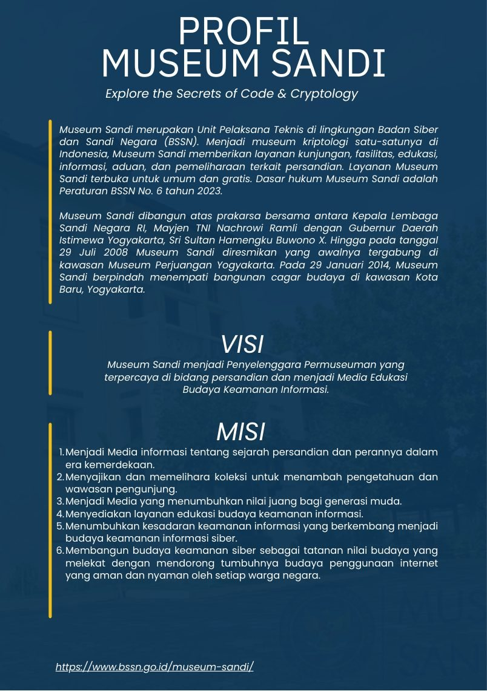

Tentang Museum Sandi
Museum Sandi merupakan pusat edukasi sejarah persandian, budaya keamanan informasi, dan kriptologi Indonesia.

Profil
Museum Kriptologi Indonesia
Museum Sandi berada di bawah BSSN, terbuka untuk umum, dan menampilkan sejarah persandian dari masa klasik, perjuangan kemerdekaan, sampai keamanan informasi modern.
Informasi kunjungan
Media sosial
Catatan: jadwal dapat berubah mengikuti kebijakan pengelola. Untuk kunjungan resmi, hubungi WhatsApp Museum Sandi.
Ruang pamer
Sembilan ruang utama dalam alur kunjungan Museum Sandi.
Sumber data
Website ini memakai dokumen pengguna, data foto, dan sumber terbuka yang relevan.